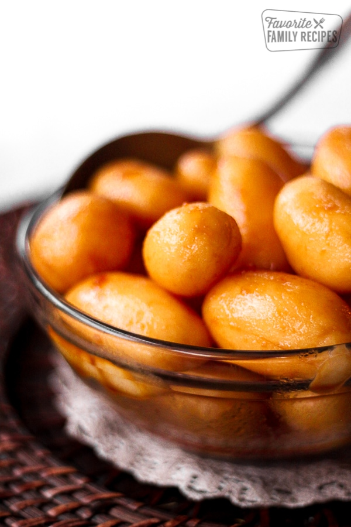

Brunede Kartofler

About This Recipe
Ingredients
- 15 new potatoes, you can find these in a can with canned veggies
- 1/4 cup sugar
- 1/4 cup butter
- 2 tablespoons water
Directions
- Drain potatoes and pat dry
- In a medium skillet, cook the potatoes on medium low heat until completely melted. DO NOT STIR!
- When ,elted and slightly darkened around the edges, add the butter and stur until it becomes a syurpy mixture.
-
Add the potates and a little bit of water(if the mixture begins to thicken and form lumps turn the heat up and it will melt again).
-
Moving the skillet around, gently cover each potato in the mixture.
Recipe and images by Erica Walker
Home
Barley Porridge
Brunede Kartofler
Salmon with Dill Sauce